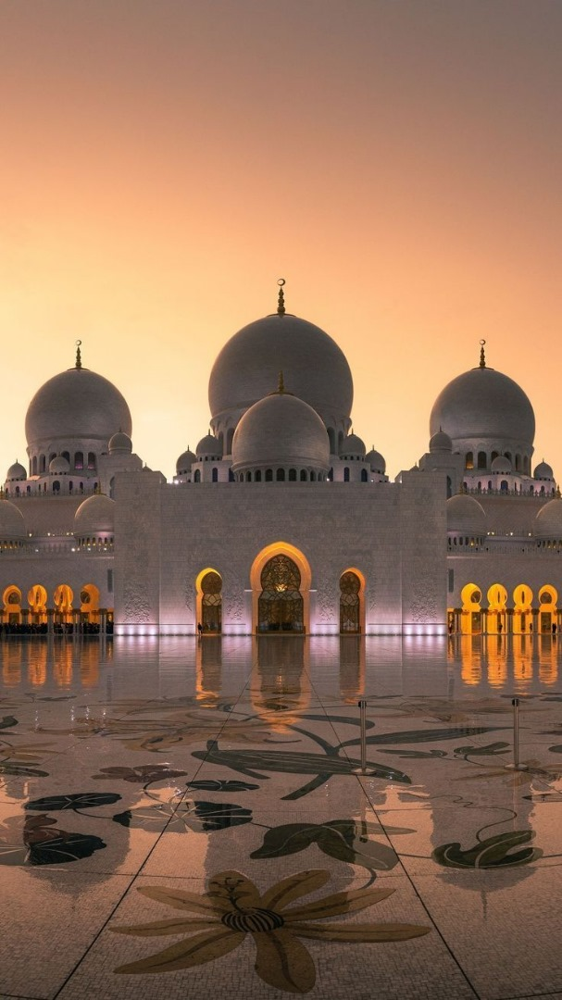
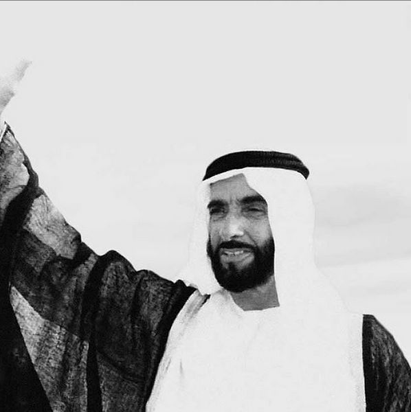
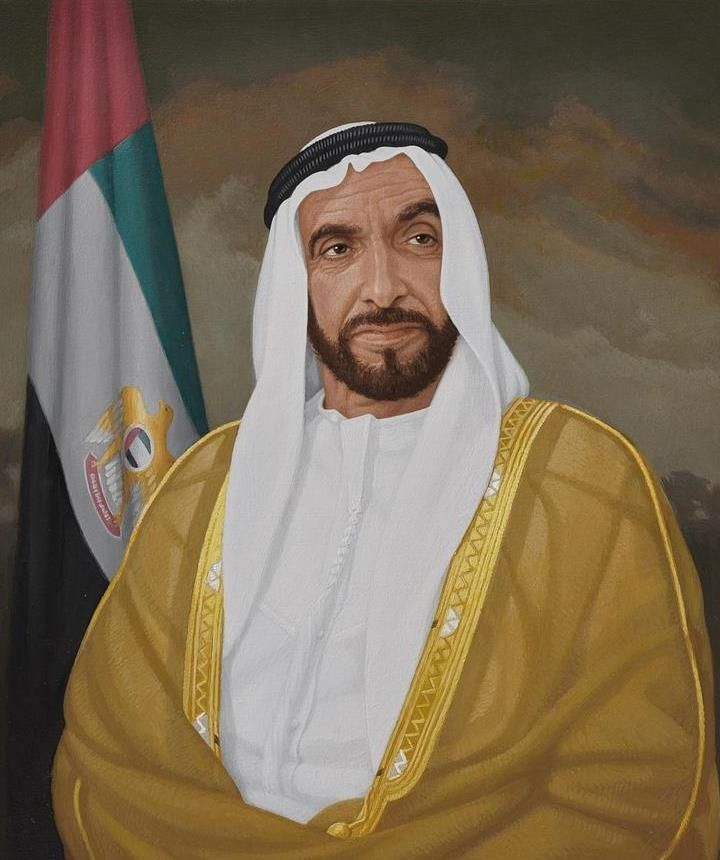
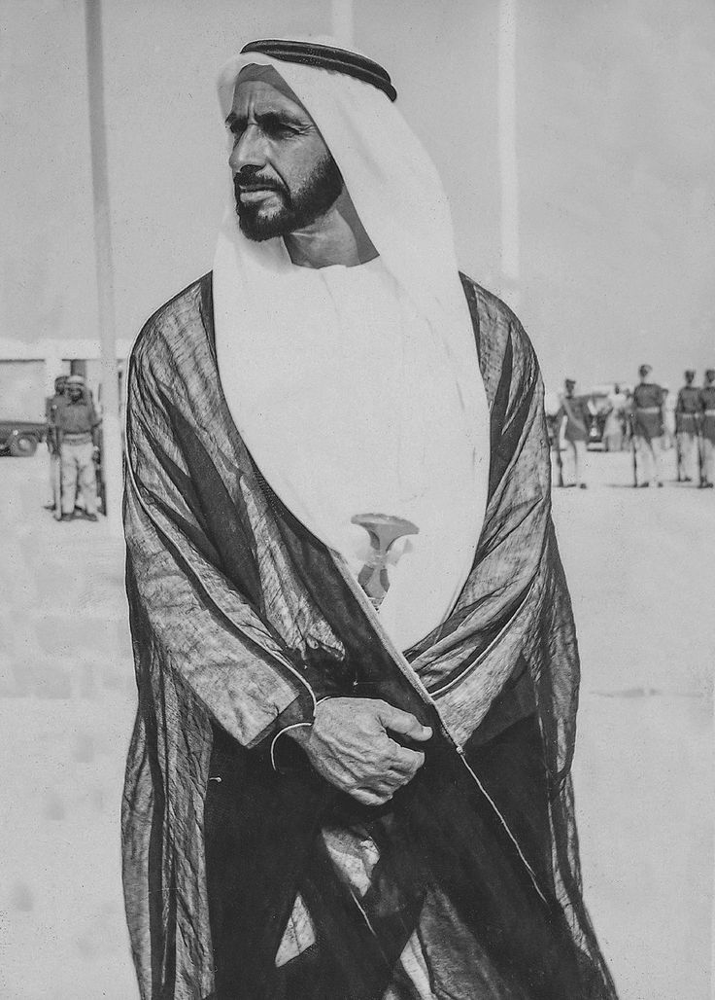
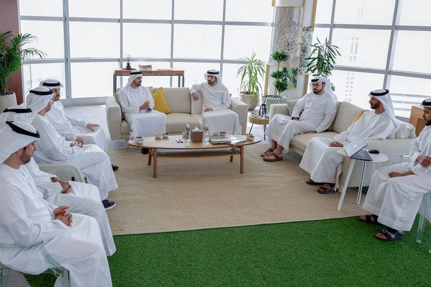
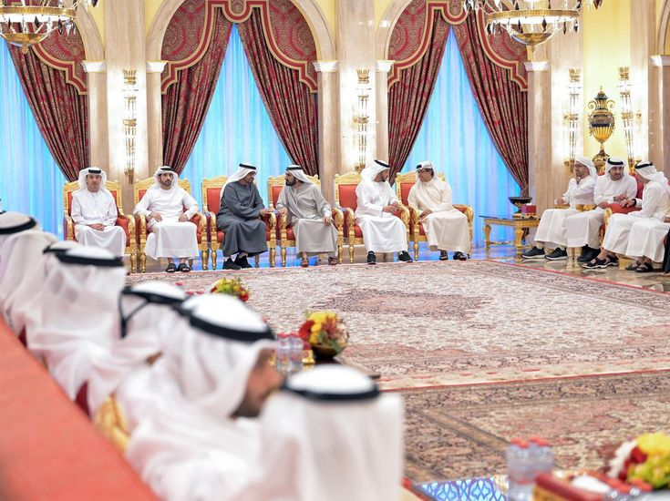
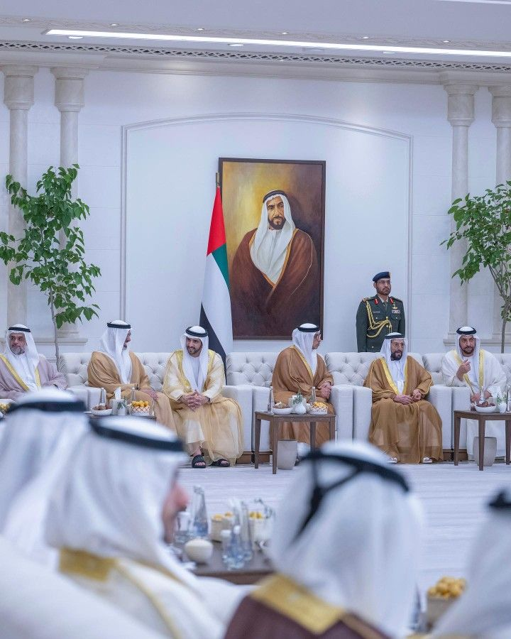
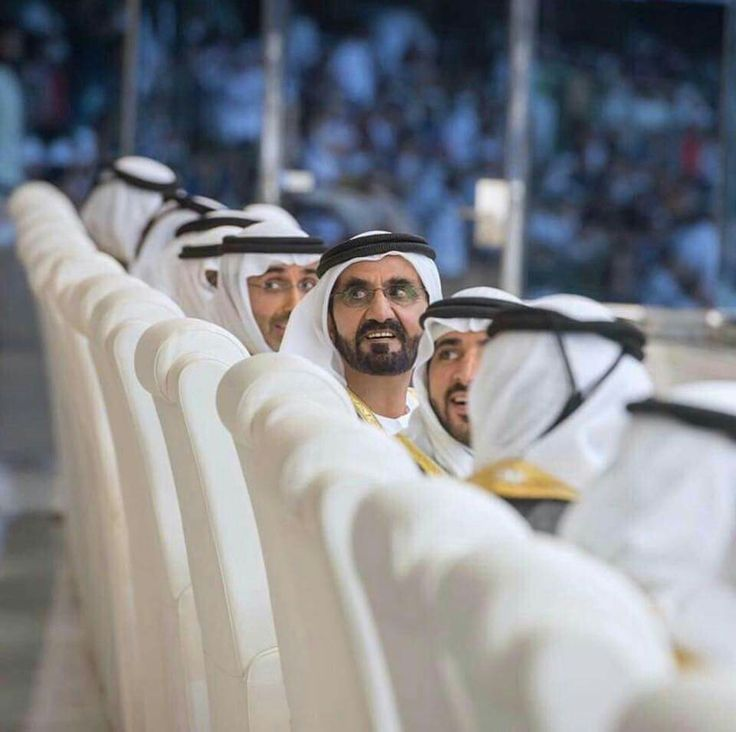

Dès votre entrée dans l’enceinte de la Grande Mosquée Cheikh Zayed d’Abu Dhabi, vous comprendrez pourquoi elle constitue un lieu si important pour les E.A.U. Ici, les personnes de tous les horizons viennent pour admirer la beauté de la structure et en apprendre plus sur la religion et la culture des Emirats Arabes Unis. Il s’agit de l’une des plus grandes mosquées au monde, construite selon la vision du Cheikh Zayed bin Sultan Al Nahyan - Père Fondateur des E.A.U. Il voulait, à l’époque, créer un havre culturel accueillant qui inspirerait les personnes de tous les milieux.
Sa construction elle-même est le fruit d’une collaboration culturelle. Sa structure majestueuse a été conçue et bâtie par des équipes talentueuses en provenance du monde entier, notamment 1 300 artisans iraniens qui ont tissé à la main le tapis de prière - le plus grand au monde.
Lors de votre visite autour des salles marbrées, vous découvrirez des trésors uniques, comme des chandeliers en or plaqué Swarovski, des mosaïques gigantesques décorant la cour intérieure, ainsi que de magnifiques bassins dans lesquels se reflètent les colonnes serties d’améthystes et de jaspes. A l’extérieur, vous serez émerveillé par les quatre minarets de 106 mètres de haut surplombant la mosquée.
UNE ARCHITECTURE A COUPER LE SOUFFLE
Vous en prendrez plein les yeux grâce à l’architecture fabuleuse de la mosquée, mais aussi grâce à son atmosphère accueillante. La politique d'accueil et d'ouverture de la mosquée encourage les visiteurs du monde entier, qu'ils soient en famille, en groupe ou seuls, non seulement à admirer sa beauté, mais aussi à profiter de cet espace propice au dialogue pour en apprendre plus sur les croyances culturelles de l'émirat.La mosquée Cheikh Zayed, construite sous la direction et la supervision du sultan Bin Zayed Al Nahyan, est un mélange entre tradition et modernité. Elle est réalisée dans un style traditionnel de l'architecture islamique, avec sa composition de colonnes et d'arches surmontée de dômes. Elle a été réalisée avec des techniques de sculpture artisanale et de production moderne.
La mosquée suit le plan traditionnelle d'une mosquée : un mur d'enceinte, une cour centrale entourée de portiques, une grande salle des prières orientée vers La Mecque dont le sol est recouvert par un tapis, quatre minarets pour l'appel à la prière. Comme les mosquées persanes et indiennes, elle utilise des dômes. La décoration intérieure suit les prescriptions islamiques : il n'y a aucune représentation humaine ou d'animaux, mais des motifs floraux, géométriques et des arabesques. Tous les arcs sont de type lancéolé. Dans la cour, les chapiteaux des colonnes représentent des fleurs de palmier dorées.

L'édifice religieux comprend 4 minarets de 107 m de hauteur, 82 dômes et 1 048 colonnes. Le complexe de bâtiments mesure environ 290 mètres sur 420 mètres, couvrant une superficie de plus de 12 hectares, sans l’aménagement paysager extérieur et les parkings. L’axe principal du bâtiment est tourné en direction du sanctuaire musulman de la Kaaba à La Mecque, en Arabie saoudite.
Le complexe comprend un centre d’enseignement et de découverte qui propose des activités culturelles éducatives et des programmes pour les visiteurs. La bibliothèque, située dans le minaret nord-est, met à disposition des livres classiques et des publications abordant une gamme de sujets islamiques : sciences, civilisation, calligraphie, arts et numismatique, y compris quelques publications rares. La collection comprend des documents dans un large éventail de langues, dont l’arabe, l’anglais, le français, l’italien, l’espagnol, l’allemand et le coréen.Autour de la mosquée se trouvent 22 tours munies chacune d'une dizaine de projecteurs braqués en direction du bâtiment. La nuit, on peut donc voir un motif lunaire évoluer, selon le cycle lunaire, à la surface du marbre.L'intérieur de la mosquée est recouvert de 12 100 panneaux de moulures en gypse et fibre de verre. Ce sont des artisans marocains qui ont sculpté des gabarits, puis le résultat a été scanné puis sculpté à grande échelle par des machines informatisées.
Les 1 048 colonnes sont également incrustées de pierres semi-précieuses sculptées cette fois-ci par des artisans locaux.
UN LIEU DE CULTE CONSIDEREE COMME UN SYMBOLE NATIONAL
UNE PREUVE DE TOLERANCE ET D'OUVERTURE SUR LE MONDE
SON HISTOIRE
La mosquée « Sheikh Zayed », avec sa superficie totale de 22 412 mètres carrés et sa capacité à accueillir jusqu'à 40 000 visiteurs, est la plus grande mosquée des Émirats arabes unis et la vingtième au rang mondial1. Son nom vient du Sheikh Zayed ben Sultan Al Nahyane, le premier président des Émirats arabes unis et commanditaire de l'édifice.
Le Sheikh Zayed ben Sultan Al Nahyane décida de faire construire une mosquée à Abu Dhabi, sa capitale, pour que ce lieu de culte en devienne le symbole national mais aussi une preuve de tolérance et d'ouverture sur le monde pour l'islam. Même s'il mourut en 2004, avant la fin de sa construction, son fils Khalifa ben Zayed Al Nahyane, qui lui succéda au pouvoir, continua le projet et donna le nom de son père à l'édifice terminé. Le Cheikh Zayed a été enterré dans la cour de la mosquée.
La Grande Mosquée Cheikh Zayed C est une mosquée sortie d un conte des mille et une nuits, un rêve né dans le cœur d un cheikh visionnaire, inspiré par un verset du coran prônant la tolérance, l amour et la rencontre entre les cultures - aujourd'hui c'est le monument phare d'abu Dhabi dans les Émirats Arabes Unis. La mosquée située à Abu Dhabi est extrêmement récente puisqu elle fut construite de 1996 à 2007 au coût de $ (dollars canadiens) ouvriers ont travaillé à sa construction sous 40 C. C'est aussi la plus grande structure en marbre construite à ce jour par l'homme. Elle contient le plus grand lustre et le plus grand tapis artisanal au monde. Contrairement aux autres mosquées, celle-ci est ouverte aux nonmusulmans. Elle a été rebaptisée en 2017 du nom de «Marie mère de Jésus»
La Grande Mosquée Cheikh Zayed C est une mosquée sortie d un conte des mille et une nuits, un rêve né dans le cœur d un cheikh visionnaire, inspiré par un verset du coran prônant la tolérance, l amour et la rencontre entre les cultures - aujourd'hui c'est le monument phare d'abu Dhabi dans les Émirats Arabes Unis. La mosquée située à Abu Dhabi est extrêmement récente puisqu elle fut construite de 1996 à 2007 au coût de $ (dollars canadiens) ouvriers ont travaillé à sa construction sous 40 C. C'est aussi la plus grande structure en marbre construite à ce jour par l'homme. Elle contient le plus grand lustre et le plus grand tapis artisanal au monde. Contrairement aux autres mosquées, celle-ci est ouverte aux nonmusulmans. Elle a été rebaptisée en 2017 du nom de «Marie mère de Jésus»



Le “Sheikh Zayed Book Award” – “Prix Nobel” de littérature du Monde Arabe
Chaque année la mosquée Sheikh Zayed accueille le plus grand concours de littérature du monde.Le “Sheikh Zayed Book Award”, est donc l’un des plus importants prix mondiaux consacrés à la littérature et la culture arabes. Il peut être légitimement considéré comme le “Prix Nobel du Monde arabe”. Pour sa quinzième édition, il vient de révéler l’ultime sélection dans les catégories “Littérature”, “Jeune auteur”, “Littérature jeunesse”, mais aussi dans les catégories “Traduction”, “Édition et culture arabe dans une autre langue”.IL est l’un des Prix littéraires du monde arabe les plus prestigieux, et les mieux dotés. Sa vocation est de :
rendre hommage aux intellectuels, chercheurs, autrices et auteurs qui ont apporté une contribution significative à la littérature, aux sciences sociales, à la culture et au savoir modernes.
honorer des personnalités éminentes qui ont réalisé des exploits au niveau régional et international, et les faire découvrir aux lecteurs dans un contexte de créativité et de pensée innovante.
faire apprécier le rôle important des traducteurs dans l’enrichissement de la culture et dans la promotion du dialogue entre les nations.




"Au cœur du désert, Abu Dhabi brille par sa riche culture et son esprit vibrant."